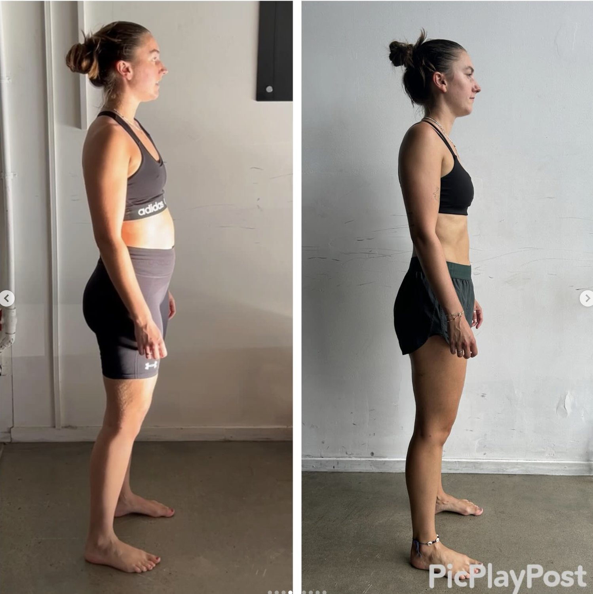

Search “back decompression exercises” and you’ll usually find recommendations like:
-
hanging from a bar
-
stretching the lower back
-
spinal traction
-
yoga decompression poses
These are often suggested to help decompress the spine, relieve pressure, and reduce lower back pain.
But many people notice something frustrating.
The relief is temporary.
The tightness returns.
The lower back stiffens again.
The same pain comes back during sitting, walking, or lifting.
The reason is simple.
The spine doesn’t just compress randomly.
Compression usually happens because of how the body distributes force during movement.
Until that improves, decompression exercises only offer short-term relief.
What “Back Decompression” Actually Means

When people talk about decompression for the back, they’re referring to reducing pressure through the spine.
This pressure can build when the spine absorbs more load than it should.
That often happens when:
-
the pelvis loses stability
-
the torso stops rotating efficiently
-
movement patterns become asymmetrical
Over time this can produce:
-
lower back stiffness
-
disc pressure
-
nerve irritation
-
persistent lower back tightness
Many people search for ways to decompress the lower back or spine at home when these symptoms appear.
Why the Spine Becomes Compressed

The spine is designed to distribute load, not carry it all.
During walking and movement, forces should be shared between the:
-
hips
-
pelvis
-
ribcage
-
legs
When this coordination breaks down, the spine begins compensating.
That compensation is what many people experience as spinal compression or lower back pressure.
Over time this can lead to:
-
stiffness in the lower spine
-
reduced mobility
-
recurring back pain
This is why people begin searching for spinal decompression exercises.
Why Many Back Decompression Exercises Only Work Temporarily
Exercises like hanging, stretching, or traction can temporarily reduce pressure in the spine.
But they often fail to address the real issue:
the movement patterns that created the compression.
If the body continues repeating the same inefficient mechanics during:
-
walking
-
sitting
-
standing
-
training
the spine will continue absorbing excessive load.
This is why many people feel better immediately after a decompression spine exercise, but the relief disappears later in the day.
What Actually Helps Decompress the Spine Long-Term
Instead of focusing only on stretching the spine, the goal is to improve how forces move through the body.
Effective strategies often include restoring:
Balanced movement through the pelvis
The pelvis acts as a major force distributor for the spine.
If the pelvis cannot move efficiently, the lower back often compensates.
Rotational movement through the torso
Human walking is rotational.
When the torso stops rotating properly, the lower spine often absorbs excessive stress.
Restoring this movement helps reduce compression forces.
Efficient walking mechanics
Humans take thousands of steps every day.
If those steps reinforce poor mechanics, spinal compression gradually increases.
Improving walking mechanics can significantly reduce lower back tension and pressure.

Back Decompression at Home
People often look for ways to decompress the spine at home, especially when experiencing lower back tightness after long periods of sitting.
Helpful strategies include:
-
breaking up prolonged sitting (only if you improve movement)
-
Engaging your TVA correctly while sitting and standing
-
improving posture during daily movement
-
focusing on balanced weight distribution while standing
-
Learning how to distribute your weight correctly
While these steps can help reduce stress on the spine, long-term improvement usually requires improving movement patterns.
Why Posture Alone Isn’t the Answer
Many people try to decompress the spine by simply sitting or standing up straighter.
But posture is not just a position you hold.
It’s the result of how your body organises itself during movement.
If movement mechanics remain inefficient, the body will gradually return to the same posture patterns.
That’s why posture corrections alone rarely solve spinal compression issues.
Addressing Spinal Compression at Functional Patterns Brisbane
At Functional Patterns Brisbane, we look at spinal compression through the lens of biomechanics.
Rather than focusing only on stretching or traction, we assess how the body distributes forces during:
-
walking
-
standing
-
bending
-
everyday movement
By improving these mechanics, many people experience improvements in:
-
lower back tightness
-
spinal pressure
-
persistent stiffness
When the body moves more efficiently, the spine often experiences less compression naturally.
If you’re dealing with persistent lower back tension or searching for back decompression exercises, understanding how your body distributes forces during movement may be the most important step toward long-term relief.